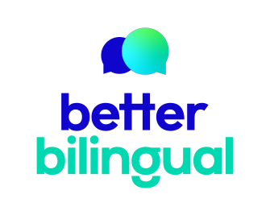
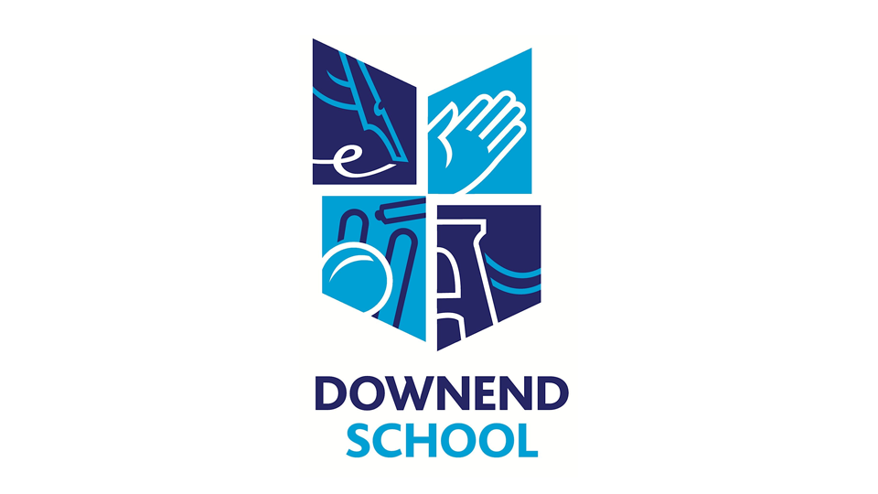
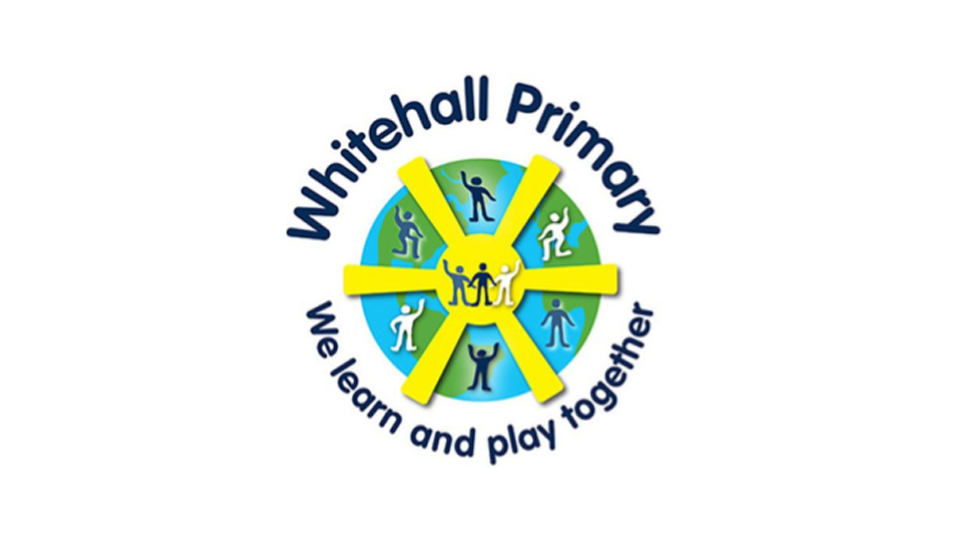

Belong. Learn. Thrive.

Empowering Every Student
To Achieve Their Potential
What do we do?
We’re Bristol-based education consultants, working collaboratively with Early Years, Primary and Secondary
educators across the UK to ensure that our multilingual pupils belong, learn and thrive.
Testimonials

Grace Stevens
EAL HLTA - Downend School
This course was really insightful and provided me with a range of practical strategies and resources I can use to support my learners going forward. Hayley was knowledgeable, covering all my concerns and questions around teaching those new to English really thoroughly. We discussed strategies at the end of making all staff aware of small strategies they can implement which can make a big difference.
Anon
Head of EAL
Thanks so much for all your help and really so thankful for having been able to employ Jane Bryan through Better Bilingual these past few terms. She's fabulous and has been a real inspiration to us and a massive help to the children she has worked with.
Sara Miles
Advisory Teacher - Children in Care South Gloucestershire Virtual School
Catherine's approach was kind, inclusive and nurturing. She used creative resources and strategies to connect with the young people and their mother. Catherine also engaged in professional meetings to feed back and advise where appropriate. Positive relationships were formed with children and adults supporting their confidence going forward.
EMA Lead
Primary School, Bath
Thank you for your support this year. I feel a lot more confident about my role and ability to support staff appropriately.
Deborah McMullin
Head of Learning Support - Gordano School
Catherine’s quiet determination and her exceptionally high standards make her an unquestionable choice in supporting strategic development & direct work with learners within an educational setting.

Michelle Edwards
EAL Lead, Whitehall Primary School
Thank you - I understand it all so much better now and feel confident to support teachers.
Latest Blogs
Click below to read our latest blogs and resources
Meet The Team
Better Bilingual is made up of a team of dedicated, proactive and client-focused consultants, with extensive experience of working across Bristol, BANES, South Glos and North Somerset.
In addition to our core team (see below), we work in collaboration with a range of other professionals and organisations – allowing us to draw upon their expertise when necessary.
We are also fortunate to have a team of committed volunteers, whose work is highly valued.
Catherine Brennan
Director
Catherine is Director of Better Bilingual, an independent education consultancy based in Bristol, UK, which she co-founded in October 2016; September 2020 saw the creation of Better Bilingual CIC as a social enterprise. Catherine also works as an Associate for the EAL Academy and is an active member of NALDIC.
A passionate advocate for multilingualism and race equality, Catherine has collaborated with a variety of educational settings and professionals to secure the best possible outcomes for children and young people from bi- and multilingual backgrounds. She has over 30 years’ experience of working with learners across the age range, 3-18.
Outside work, Catherine enjoys running, cooking, live music and studying the Arabic language.
Hayley Hayes
Senior Associate
Hayley has excelled at all levels of primary education as an NPQH trained head teacher - spanning schools in London, Bristol & overseas. Hayley’s big picture view and breadth of experience partners her determination that all children deserve an inspiring education, whatever their ability, language or ethnic origin.
In addition to this, Hayley has a long association with mentoring and coaching in education. She is an associate lecturer in Initial Teacher Training at UWE, specialising in mentoring trainee teachers on school placement. For North Somerset, Hayley has supported excluded pupils across the 5-16 age range and she is also an experienced tutor.
Hayley is currently a class teacher at Southville Primary School in Bristol where she integrates EAL pupils into the school community so they are able to confidently access the curriculum and enjoy learning.
Beyond education, Hayley loves to walk/cycle in nature with her dog and family, immerse herself in cold water swimming, garden and explore the arts.
Anna Comfort
Associate
Anna is particularly passionate about working with young EAL learners and has over fifteen years’ teaching experience in culturally diverse schools across Bristol. She is currently the EAL and EYFS lead at Willow Park Primary school which is situated in the heart of Bristol and prior to that taught ESOL to refugees and asylum seekers.
Anna has always loved travel and has been interested in learning languages. She completed her teacher training placement in France and, several years later, spent time in India training primary school teachers in the use of phonics and in the development of English language learning in their schools. She has developed her own EAL music and drama project for schools and has been working in collaboration with the University of the West of England on how to develop this project as CPD for teachers and trainees.
She also enjoys walking, yoga, music and dancing.
Evie Dickinson
Digital Marketing Manager
Evie works primarily in the charity sector - she is the current UK Manager of Community Highlight CBO and works for various other Bristol based organisations in both paid and voluntary roles.
As Digital Marketing Manager Evie is responsible for website building and maintenance, uploading online content and some communications, including the Better Bilingual monthly newsletter.
In her free time Evie likes listening to Leonard Cohen and stroking cats in the street.
Peri Taylor
Events Manager
Peri has a marketing background with experience of working in education for CCBED (Centre for Capacity Building and Enterprise Development), a social enterprise providing enterprise training for under-represented young people in Bristol. In addition, she has worked on a project for Babbasa, specialising in youth training.
Peri is also an artist - painting colourful coastal scenes, turtles and elephants, inspired by her visits to Sri Lanka and South Africa.
Lucille Charles
Non-Executive Director
Lucille is a retired headteacher with over 40 years’ experience of primary education. This experience covers a variety of socio-economic communities and cultural backgrounds, in the cities of Bradford, Leicester and Bristol. She is now actively involved in supporting several charitable organisations.
Lucille believes passionately in the power of education to improve the life chances of disadvantaged children. During her time as a headteacher she has seen the positive impact on pupils and staff who have had access to additional language support and Diversity and Inclusion Training.
Paul Fordham
Non-Executive Director
With 25 years’ experience of work in performing arts production, development, fundraising and management, Paul has a passion for diversity and democracy in the arts. He has worked with diverse communities across Britain, particularly Caribbean, Somali and South Asian, on music and dance. He has managed and programmed a range of festivals, agencies and venues including The Bristol Beacon, Sandwell Arts Festival, Chipping Norton Theatre and Punch, largely through his own arts company, Way Art West.
Paul believes that education is key to embedding diversity in the arts and this is one of the drivers behind his involvement with Better Bilingual.